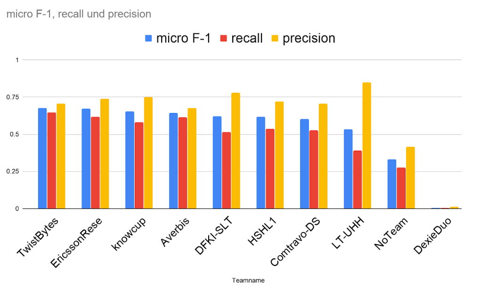

GermEval 2019 Twistbytes
Twistbytes Approach to Hierarchical Classification shared Task at GermEval 2019¶
We explain here, step by step, how to reproduce results of the approach and discuss parts of the paper. The approach was aimed at building a strong baseline for the task, which should be beaten by deep learning approaches, but we did not achieve that, so we submitted this baseline, and got second in the flat problem and 1st in the hierarchical task (subtask B). This baseline builds on strong placements in different shared tasks, and although it only is a clever way for keyword spotting, it performs a very good job.
Task Description¶
The task was basically to classify blurbs (small summaries/advertarial texts/?) into 8 classes (subtask A) or into hierarchical structutured 343 labels (subtask B). There were 11638 samples in the training set, 2910 in the development and 4157 in the test set. There are some indicators that the developement and test set were similar to the training data, as the average number of labels were similar (3.1). See https://www.inf.uni-hamburg.de/en/inst/ab/lt/resources/data/germeval-2019-hmc/gest19-1-description.pdf for a (very) detailed description of the task. The task is not especially useful for real applications, but one can see what can be performed by hierarchical classifiers for document classification even with few texts and a large number of labels on German text. Still, a future application would be that a publishing house receive a book, create the blurb, classify it automatically and put online.
Literature¶
Please see the detailed Task description for a general Literature. For the model, we were inspired by the architecture from https://www.researchgate.net/publication/316602155_MAZA_Submissions_to_VarDial_2017 . Also check out the our approach which shaped this approach used in VarDial 2018: https://blog.zhaw.ch/datascience/twist-bytes-vardial-2018/
Approach¶
First, we load the libraries (we need to install also the sklearn from my fork). We discuss here the hierarchical approach (Subtask B), to solve the 343 labels problem. The root node solution is similar but has more ngrams and higher number of maximum features. We go step by step in a jupyter session over the code.
#!/usr/bin/env python
"""
GermEval 2019 Hierarchical classification shared task
Twistbytes Approach (Fernando Benites)
"""
from sklearn.model_selection import train_test_split
from sklearn.pipeline import make_pipeline
# needs the one from pip install git+https://github.com/fbenites/sklearn-hierarchical-classification.git
#or the developer branch
from sklearn_hierarchical_classification.classifier import HierarchicalClassifier
from sklearn_hierarchical_classification.constants import ROOT
from sklearn.pipeline import Pipeline, FeatureUnion
from sklearn.feature_extraction.text import TfidfVectorizer
from sklearn.metrics import f1_score, classification_report, make_scorer
from sklearn.model_selection import train_test_split
from sklearn import preprocessing
from sklearn.preprocessing import MultiLabelBinarizer
from sklearn.svm import LinearSVC
import numpy as np
from sklearn.multiclass import OneVsRestClassifier
import nltk
import sys
#read data utilities
from parse_data import *
# Used for seeding random state
RANDOM_STATE = 42
We now introduce the build feature extractor. It uses many TfidfVectorizers for different n-grams (1-7 and 1-3 with German stopwords removal, and 2-3 char n-gram) to create a count matrix (Tf=> Term frequency) and weight the matrix with the inverse document frequency (idf). This creates a matrix which gives high weights/values for n-grams which occur in specific documents, and penalizes words that occur often (no document specificity). A further note, we changed here from the competition the values from 2-5 used in the submitted predictions, to 1-7 which gives a plus of 0.002 f-1 micro score. The FeatureUnion construct allows us to glue every thing in a big matrix, so the sklearn-like classifier can process it in one run.
def build_feature_extractor():
context_features = FeatureUnion(
transformer_list=[
('word', TfidfVectorizer(
strip_accents=None,
lowercase=True,
analyzer='word',
ngram_range=(1, 7),
max_df=1.0,
min_df=0.0,
binary=False,
use_idf=True,
smooth_idf=True,
sublinear_tf=True,
max_features=70000
)),
('word3', TfidfVectorizer(
strip_accents=None,
lowercase=True,
analyzer='word',
ngram_range=(1, 3),
max_df=1.0,
min_df=0.0,
binary=False,
use_idf=True,
smooth_idf=True,
sublinear_tf=True,
stop_words=nltk.corpus.stopwords.words('german'),
max_features=70000
)),
('char', TfidfVectorizer(
strip_accents=None,
lowercase=False,
analyzer='char',
ngram_range=(2, 3),
max_df=1.0,
min_df=0.0,
binary=False,
use_idf=True,
smooth_idf=True,
sublinear_tf=True,
)),
]
)
features = FeatureUnion(
transformer_list=[
('context', Pipeline(
steps=[('vect', context_features)]
)),
]
)
return features
We create a function to nice print the results for uploading to the competition website:
def print_results(fname,hierarchy,y_pred,mlb,ids,graph):
it_hi=[tj for tk in hierarchy.values() for tj in tk]
roots=[tk for tk in hierarchy if tk not in it_hi]
prec=lambda x: [tk for tk in graph.predecessors(x )]+ [tk for tj in graph.predecessors(x )for tk in prec(tj)]
with open(fname, "w") as f1:
for task in range(2):
if task==0:
f1.write("subtask_a\n")
for i in range(y_pred.shape[0]):
f1.write(ids[i]+"\t")
st1=""
labs=set()
for j in y_pred[i,:].nonzero()[0]:
if mlb.classes_[j] in roots:
st1+=mlb.classes_[j][2:]+"\t"
else:
for tk in prec(mlb.classes_[j]):
if tk==-1:
continue
if tk[0]=="0":
labs.add(tk[2:])
f1.write(st1[:-1]+"\t".join(labs)+"\n")
if task==1:
f1.write("subtask_b\n")
for i in range(y_pred.shape[0]):
f1.write(ids[i]+"\t")
st1=""
for j in y_pred[i,:].nonzero()[0]:
st1+=mlb.classes_[j][2:]+"\t"
f1.write(st1[:-1]+"\n")
To the main part, first we load the data. Important here, the blurbs*.txt are in fact xml, which we load with a helper script. For that we diverge from the original data, by wrapping the content of the files with a root node. This is fixed in the data from my github directory.
if __name__ == "__main__":
train=1
if "data" not in globals():
if train==1:
data,labels=read_data("blurbs_train.txt")
data_dev,labels_dev=read_data("blurbs_dev.txt")
else:
data,labels=read_data("blurbs_train_and_dev.txt")
data_dev,labels_dev=read_data("blurbs_test_nolabel.txt")
hierarchy, levels=read_hierarchy("hierarchy.txt")
r"""Test that a nontrivial hierarchy leaf classification behaves as expected.
We build the following class hierarchy along with data from the handwritten digits dataset:
<ROOT>
/ \
A B
/ \ | \
1 7 C 9
/ \
3 8
"""
if "ROOT" in hierarchy:
hierarchy[ROOT] = hierarchy["ROOT"]
del hierarchy["ROOT"]
class_hierarchy = hierarchy
keywords = ["title","authors","body","copyright","isbn"]
Then, we transform the labels and divide train and test set. Here, we differentiate between the training and the test set blocks, since they depend on different data chunks.
mlb = MultiLabelBinarizer()
#depending on the mode load different data
if train==1:
data_train=["\n".join([tk[ky] for ky in keywords if tk[ky]!=None]) for tk in data ]
labels_train=mlb.fit_transform(labels)
X_train_raw, X_dev_raw, y_train, y_dev = train_test_split(data_train,labels_train,test_size=0.2,random_state=42)
else:
X_train_raw=["\n".join([tk[ky] for ky in keywords if tk[ky]!=None]) for tk in data ]
y_train=mlb.fit_transform(labels)
y_train = mlb.transform(labels)
del data
ids= [tk["isbn"] for tk in data_dev]
X_dev_raw=["\n".join([tk[ky] for ky in keywords if tk[ky]!=None]) for tk in data_dev ]
We now initialize the classification pipeline. First the vectorizer, then a liner SVM in a one vs rest manner. This we glue together in a pipeline creating a base classifier. The pipeline ensures that the result of the vectorizer is given as input to the classifier. For subtask A we could just use this base classifier (using more ngrams would be helpful, though) and set the right y-labels. For subtask B, we call the hierarchical classifier with this as base classifier. The selection of algorithm lcn and training_strategy siblings makes that the base classifier is trained in each node so that it decides which child of the parent is likely to be predicted.
vectorizer = build_feature_extractor()
bclf = OneVsRestClassifier(LinearSVC())
base_estimator = make_pipeline(
vectorizer, bclf)
clf = HierarchicalClassifier(
base_estimator=base_estimator,
class_hierarchy=class_hierarchy,
algorithm="lcn", training_strategy="siblings",
preprocessing=True,
mlb=mlb,
use_decision_function=True
)
To create the training and prediction is really easy:
print("training classifier")
clf.fit(X_train_raw, y_train[:,:])
print("predicting")
y_pred_scores = clf.predict_proba(X_dev_raw)
However, what gave us the edge was to set a very good threshold. First, we need to post-process the predictions of the SVM-hierarchical classifier.
The classifier linearSVC outputs values betwee -1 and 1. But for nodes which did not have any prediction, the hierarchical classifier let it to 0. So first we set every value which is zero to a lower value than -1 (here -10).
y_pred_scores[np.where(y_pred_scores==0)]=-10
Now we choose a good threshold. Lets see how the graph was for the development set, if we change the threshold.
import matplotlib.pyplot as plt
x_graph=np.linspace(-0.8,0.4,100)
y_graph=[f1_score(y_true=y_dev, y_pred=y_pred_scores>tx, average='micro') for tx in x_graph]
plt.plot(x_graph,y_graph)
![]()
We can see that the f1-score is almost convex and the top is around -0.2. We can chose -0.25 because it seemed more stable on the right side of the top. Using the standard threshold at 0 would give only 0.65 instead of 0.67 (0.02 was a lot in this competition).
y_pred=y_pred_scores>-0.25
We print it out (if you want you can use train=0 and get the predictions for the final result).
if train==1:
print('f1 micro:',
f1_score(y_true=y_dev, y_pred=y_pred, average='micro'))
print('f1 macro:',
f1_score(y_true=y_dev, y_pred=y_pred, average='macro'))
print(classification_report(y_true=y_dev, y_pred=y_pred))
else:
import networkx as nx
graph = nx.DiGraph(hierarchy)
print_results("submission_baseline.txt",hierarchy,y_pred>-0.25,mlb,ids,graph)
At the end in the competition, in the figure below, we see that in this subtask the micro-F1 was linked to recall, since most approaches focused in precision, we could achieve with the threshold strategy the best result.

We thank the organizers of the GermEval 2019 Task 1 shared task, it was a fun competition.